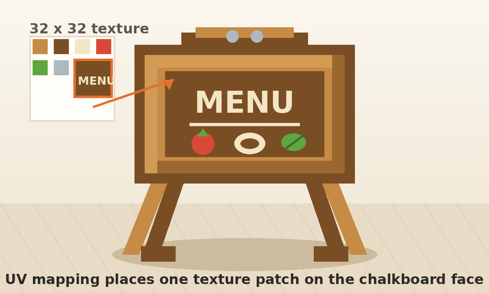

Day 7 — Week 2: Texturing & Polish
07Chalkboard menu stand — first UV mapping
Yesterday you painted texture pixels directly. Today you learn a different texture
skill: choosing which part of a texture image lands on one face. Build a small menu stand, then map
the chalkboard face to a prepared MENU patch.
One chalkboard menu stand render: a new kitchen prop with a wooden frame,
angled legs, a dark chalkboard face, and a readable MENU label placed with
UV mapping. The new skill is moving a face's UV rectangle, not drawing more
pixels on yesterday's prop.
Warm up — 30-second recall
Answer first, then open the cards. This keeps old skills available while today adds a new one.
What does the shared palette do for the asset pack?
What did yesterday's Paint Brush work change?
What is a texture?
The one new idea — UVs choose the texture area
A UV map is the unfolded layout that tells Blockbench which part of the texture image appears on each model face. Painting changes the image. UV mapping changes the placement of that image on the model.
Blockbench's official guide notes that the UV Panel in Edit Mode is used for UV mapping, while in Paint Mode the UV Editor is used for painting. So today, do the mapping work from Edit mode: select a face, then move and resize its UV rectangle until the front board shows the intended patch. [Blockbench Wiki — UV Panel and Paint Mode]
Map only one important face today: the front chalkboard. If every face becomes a UV puzzle, the lesson gets too big. One clean mapped face is the win.

Do it with me
Keep the Course Palette open. Use exact colors when filling parts, but keep the UV lesson focused on placement rather than perfect art.
-
New Generic Model → name it
Start a new Generic Model. Save early with the same name. This is a new prop for the kitchen pack, not a repaint of an old model.chalkboard-menu-stand -
Build the chalkboard panel
Add one flat cube for the board face. Suggested size:X 8,Y 4.5,Z 0.4. Fill it with Dark Wood so the cream chalk marks will read clearly while staying inside the course palette. Rename itchalkboard_face. -
Add the wooden frame
Add four thin cubes around the board: top, bottom, left, and right frame pieces. Fill them with Wood. Make the bottom rail slightly thicker so the prop feels chunky and low-poly. Rename the pieces clearly in the Outliner. -
Add two angled legs and feet
Add two narrow cubes below the frame for front legs. Rotate each one slightly outward, or keep them straight if rotation is slowing you down. Add two small dark feet at the bottom. The stand should read from a distance before any UV work begins. -
Add a top bar and two round pegs
Add a small wooden bar above the frame. Add two tiny steel or cream cubes as pegs if you want the stand to feel assembled. This is optional polish; do not let it steal the UV time. -
Create a 32 × 32 texture
In the Textures panel, create a new texture namedmenu-signat 32 × 32. Use the template option if Blockbench offers it. You need one texture image that contains both plain colors and a small menu patch. -
Paint a simple menu patch on the texture
Switch to Paint mode. In one clear area of the texture, draw a small dark rectangle using Dark Wood, then add creamMENUmarks, a line, and one or two simple food-color blocks. It does not need perfect letters. It only needs a recognizable patch to map onto the board. -
⭐ Map the front face to the menu patch
Switch back to Edit mode and selectchalkboard_face. In the UV panel, use the face tabs (North, South, East, West, Up, Down) to find the side that faces the camera. Move that face's UV rectangle over the menu patch you painted, then resize it so the whole patch fits. Orbit the model: the board should now show the patch instead of a random part of the texture. -
Fix stretching before adding detail
IfMENUlooks squashed, widen or narrow the UV rectangle. If it is cut off, move the rectangle until the whole patch is inside. If it is upside down, rotate or flip the UV selection if your UV panel exposes that action; otherwise move the patch on the texture and try again. -
Fill the rest simply
Use Paint Bucket → Fill Mode: Cube for frame, legs, feet, and pegs. Do not hand-paint every side. Today's lesson is controlled placement on one face. -
Render the new prop
Capture a slightly high 3/4 view where the menu face is readable. If you have time, place the stand beside the crate or plate to show it belongs in the same kitchen pack. -
Post your Day-7 itch.io post
Publish the render on itch.io and RedNote with the captions below. Streak: Day 7.
Do not stay in Paint Mode and try to fix the front by painting over and over. If the wrong part of the image appears on the face, that is a UV placement problem. Go back to Edit Mode and move the face's UV rectangle.
itch.io post (English):
RedNote / 小红书 (中文):
Quick self-check
Say the answer first, then open the card.
What is the difference between painting and UV mapping?
Why did we map only the front chalkboard face today?
If the word appears cut off, what should you move?
Why is this useful for a future asset pack?
Read the official Blockbench overview notes on the UV Panel and Paint Mode. The key distinction: use the UV Panel in Edit Mode for mapping, and Paint Mode's UV Editor for painting.
Next, use another new modeling skill: inflate / deflate or bevel-like chunky edge polish. That can make a new kitchen prop feel softer and more toy-like without leaving the low-poly style.
If the menu text lands on the wrong face, stretches, flips, or disappears, tell me exactly what you selected and what the UV panel shows. Bring back your Day-7 menu stand and I'll set up the next new-skill lesson.